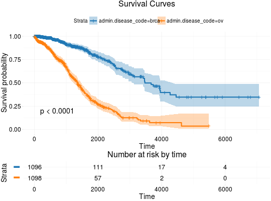

Plot Kaplan-Meier Estimates of Survival Curves for Survival Data
Usage
kmTCGA(x, times = "times", status = "patient.vital_status", explanatory.names = "1", main = "Survival Curves", risk.table = TRUE, risk.table.y.text = FALSE, conf.int = TRUE, return.survfit = FALSE, pval = FALSE, ...)
Arguments
- x
- A
data.framecontaining survival information. See survivalTCGA. - times
- The name of time variable.
- status
- The name of status variable.
- explanatory.names
- Names of explanatory variables to use in survival curves plot.
- main
- Title of the plot.
- risk.table
- Whether to show risk tables.
- risk.table.y.text
- Whether to show long strata names in legend of the risk table.
- conf.int
- Whether to show confidence intervals.
- return.survfit
- Should return survfit object additionaly to survival plot?
- pval
- Whether to add p-value of the log-rank test to the plot?
- ...
- Further arguments passed to ggsurvplot.
Description
Plots Kaplan-Meier estimates of survival curves for survival data.
Issues
If you have any problems, issues or think that something is missing or is not clear please post an issue on https://github.com/RTCGA/RTCGA/issues.
Examples
## Extracting Survival Data library(RTCGA.clinical) survivalTCGA(BRCA.clinical, OV.clinical, extract.cols = "admin.disease_code") -> BRCAOV.survInfo # first munge data, then extract survival info library(dplyr) BRCA.clinical %>% filter(patient.drugs.drug.therapy_types.therapy_type %in% c("chemotherapy", "hormone therapy")) %>% rename(therapy = patient.drugs.drug.therapy_types.therapy_type) %>% survivalTCGA(extract.cols = c("therapy")) -> BRCA.survInfo.chemo # first extract survival info, then munge data survivalTCGA(BRCA.clinical, extract.cols = c("patient.drugs.drug.therapy_types.therapy_type")) %>% filter(patient.drugs.drug.therapy_types.therapy_type %in% c("chemotherapy", "hormone therapy")) %>% rename(therapy = patient.drugs.drug.therapy_types.therapy_type) -> BRCA.survInfo.chemo ## Kaplan-Meier Survival Curves kmTCGA(BRCAOV.survInfo, explanatory.names = "admin.disease_code", pval = TRUE)
kmTCGA(BRCAOV.survInfo, explanatory.names = "admin.disease_code", main = "", xlim = c(0,4000))
kmTCGA(BRCA.survInfo.chemo, explanatory.names = "therapy", xlim = c(0, 3000), conf.int = FALSE)


See also
RTCGA website http://rtcga.github.io/RTCGA/Visualizations.html. Other RTCGA:RTCGA-package,
boxplotTCGA, checkTCGA,
convertTCGA, datasetsTCGA,
downloadTCGA,
expressionsTCGA, heatmapTCGA,
infoTCGA, installTCGA,
mutationsTCGA, pcaTCGA,
readTCGA, survivalTCGA,
theme_RTCGA